Приймачі: огляд застосунків¶
Скріншоти з вашого пристрою
Усі знімки зроблено на HackRF One + PortaPack H2 з прошивкою Mayhem v2.4.0. Більшість застосунків показано у стані «за замовчуванням», до приймання чи передавання. Опис складено за вікі Mayhem та екранами; дрібні відмінності залежать від версії прошивки.
У меню Receive — застосунки для приймання й декодування сигналів. Поля 0 32 32 у верхній частині екрана — це AMP / LNA / VGA (ВЧ-підсилювач, малошумний підсилювач і підсилювач основної смуги), див. Основні елементи керування.
Меню Receive¶
Receive — сторінка 1¶
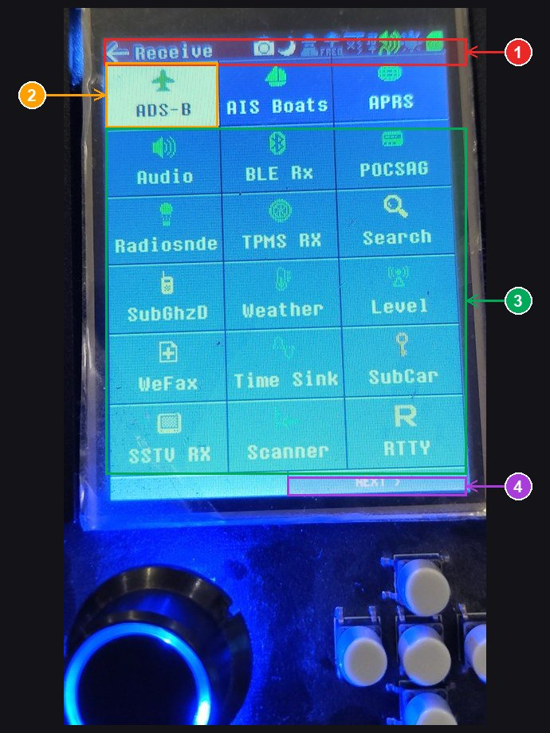
Пункти меню: ADS-B, AIS Boats, APRS, Audio, BLE Rx, POCSAG, Radiosonde, TPMS RX, Search, SubGhzD, Weather, Level, WeFax, Time Sink, SubCar, SSTV RX, Scanner, RTTY.
Елементи екрана:
- Назва розділу (стрілка ← — назад) і значки стану
- Вибрана кнопка (фокус) — відкривається Select
- Кнопки застосунків: 3 стовпці × 6 рядків; дотик або кнопки/енкодер
- NEXT › — наступна сторінка меню
Receive — сторінка 2¶
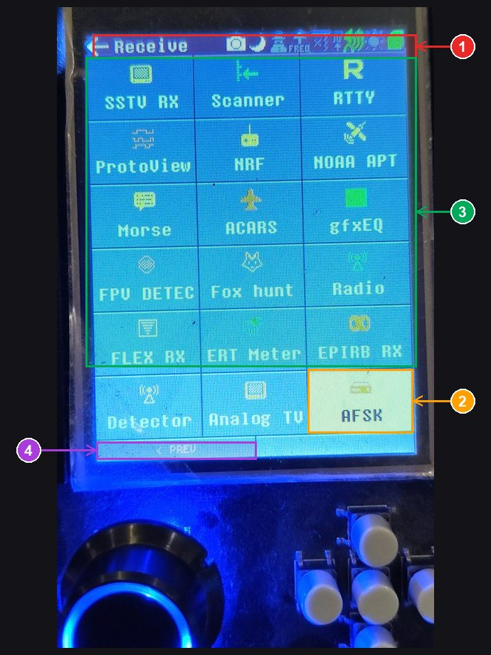
Пункти меню: SSTV RX, Scanner, RTTY, ProtoView, NRF, NOAA APT, Morse, ACARS, gfxEQ, FPV Detect, Fox Hunt, Radio, FLEX RX, ERT Meter, EPIRB RX, Detector, Analog TV, AFSK.
Елементи екрана:
- Назва розділу та значки стану
- Вибрана кнопка (AFSK)
- Кнопки застосунків
- ‹ PREV — попередня сторінка
Застосунки¶
ADS-B RX¶
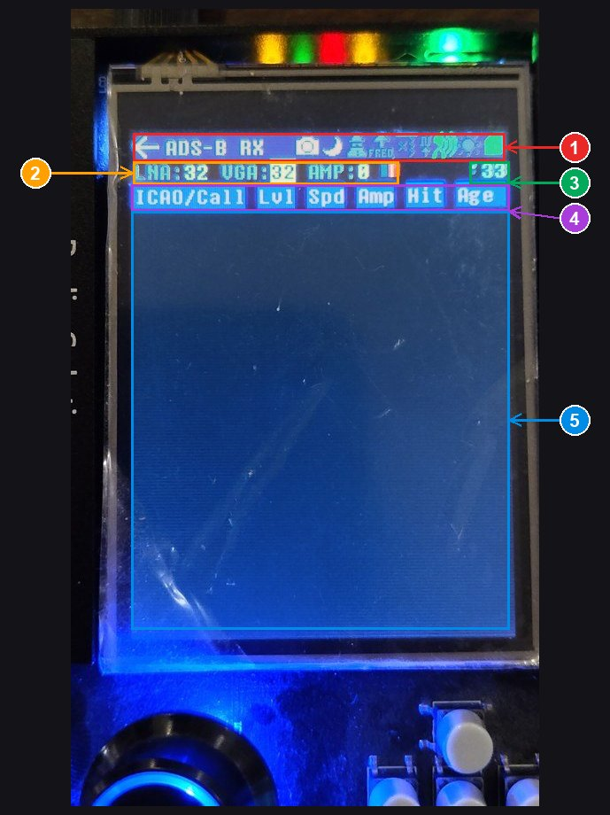
Приймає сигнали транспондерів літаків ADS-B на 1090 МГц і показує список повітряних суден.
- Стовпці списку: ICAO/Call (адреса/позивний), Lvl (рівень сигналу), Spd (швидкість), Amp, Hit (кількість прийнятих пакетів), Age (час від останнього пакета).
- Вибравши літак, можна відкрити деталі та показати його на карті (потрібна карта світу на SD-карті).
- Навіть коротка антена приймає ADS-B, якщо ввімкнено ВЧ-підсилювач (AMP = 1).
Докладніше на сторінці застосунку
Елементи екрана:
- Рядок заголовка
- LNA / VGA / AMP — підсилення
- Гучність і рівень RSSI
- Заголовки колонок: ICAO/Call, Lvl, Spd, Amp, Hit, Age
- Список прийнятих літаків (вибрати → деталі, карта)
AIS RX (кораблі)¶
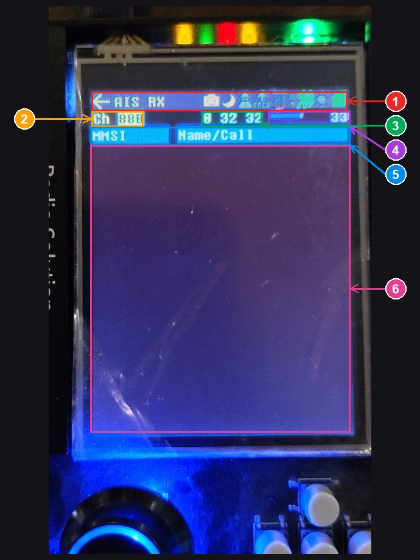
Декодує дані морських суден системи AIS на VHF 161,975 МГц (канал 87B) або 162,025 МГц (канал 88B).
- Ch — вибір каналу, MMSI і Name/Call — колонки списку суден.
Докладніше на сторінці застосунку
Елементи екрана:
- Рядок заголовка
- Ch — канал AIS (87B/88B)
- AMP / LNA / VGA
- Рівень RSSI та гучність
- Колонки: MMSI та Name/Call
- Список суден
APRS RX¶
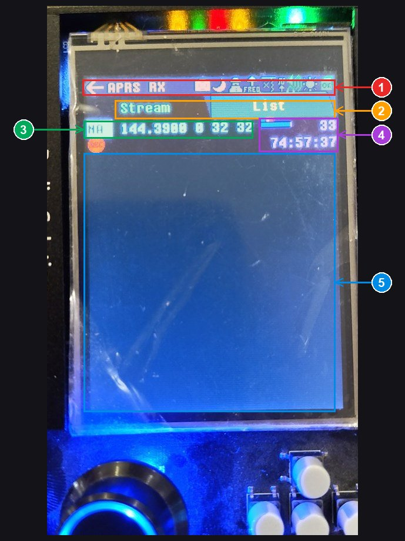
Приймає й показує пакети APRS (позиційні звіти й повідомлення радіоаматорів).
- Дві вкладки: Stream (потік) і List (список станцій); частота на скріншоті — 144,3900 МГц (США); у Європі — 144,800 МГц.
Докладніше на сторінці застосунку
Елементи екрана:
- Рядок заголовка
- Вкладки Stream (потік) і List (список станцій)
- Регіон (MA — ручний) і частота; AMP/LNA/VGA
- RSSI, гучність і час
- Потік або список прийнятих пакетів APRS
Audio RX¶
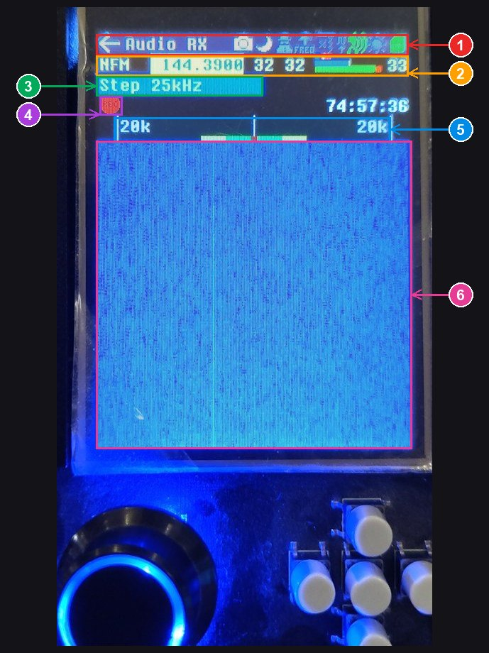
Універсальний аудіоприймач: AM, NFM, WFM, SSB, а також режим SPEC (спектр). Основний застосунок для прослуховування сигналів.
- Зверху — режим (NFM), частота, підсилення, смужка рівня й гучність.
- Step 25kHz — крок налаштування; нижче — водоспад із шкалою смуги (±20 кГц).
- Червоне коло зліва — кнопка запису звуку.
Докладніше на сторінці застосунку
Елементи екрана:
- Рядок заголовка
- Режим (NFM), частота, підсилення, RSSI і гучність
- Step — крок налаштування частоти
- REC — запис звуку
- Шкала смуги (±20 кГц) і маркер центру
- Водоспад спектра навколо частоти
BLE RX¶
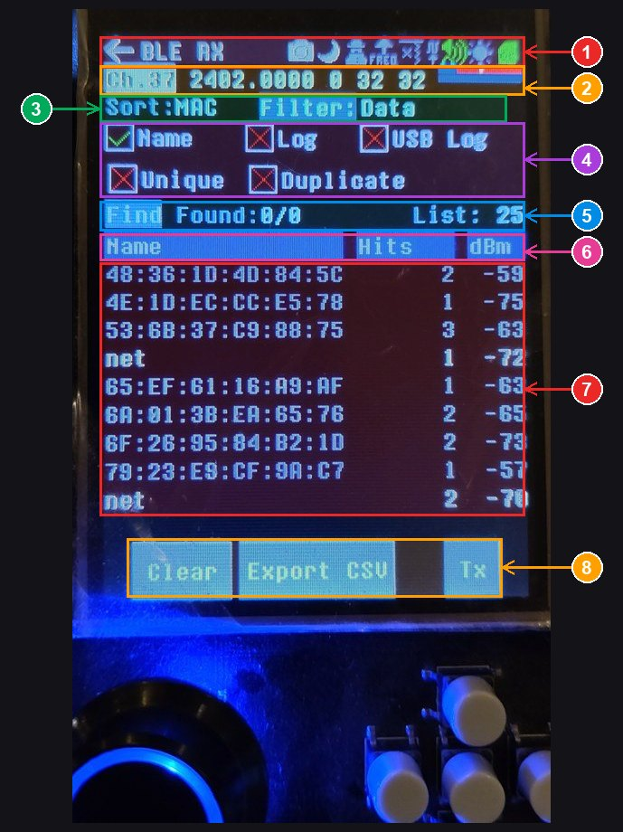
Сканує рекламні пакети Bluetooth Low Energy (2,4 ГГц) і показує список пристроїв за MAC-адресами.
- Кнопки Clear, Export CSV, Tx; прапорці Name, Log, USB Log, Duplicate; сортування й фільтр за вмістом пакета.
- Вибрав запис — відкриється детальний вигляд останнього пакета.
Докладніше на сторінці застосунку
Елементи екрана:
- Рядок заголовка
- Канал, частота й підсилення
- Sort — сортування; Filter — фільтр за даними/іменем
- Прапорці Name, Log, USB Log, Unique, Duplicate
- Find — пошук; Found/List — знайдено/у списку
- Заголовки: Name (MAC), Hits, dBm
- Список знайдених BLE-пристроїв
- Clear, Export CSV, Tx
POCSAG RX¶
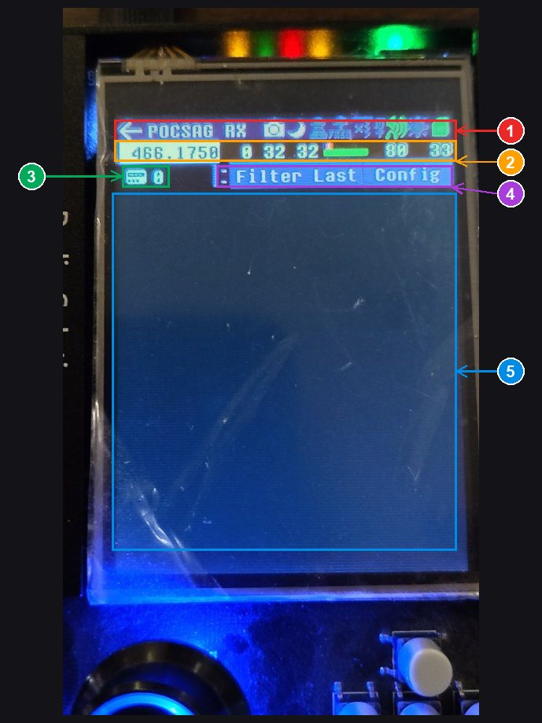
Приймає повідомлення пейджерів POCSAG (512/1200/2400 бод).
- Типова частота — 466,1750 МГц (на скріншоті); у радіоаматорів поширена 439,9875 МГц.
- Кнопки Filter, Last, Config (налаштування модему та фільтрів).
Докладніше на сторінці застосунку
Елементи екрана:
- Рядок заголовка
- Частота, підсилення, RSSI і гучність
- Лічильник прийнятих повідомлень
- Filter, Last, Config — фільтр, останнє, налаштування
- Список повідомлень пейджерів
Radiosonde¶
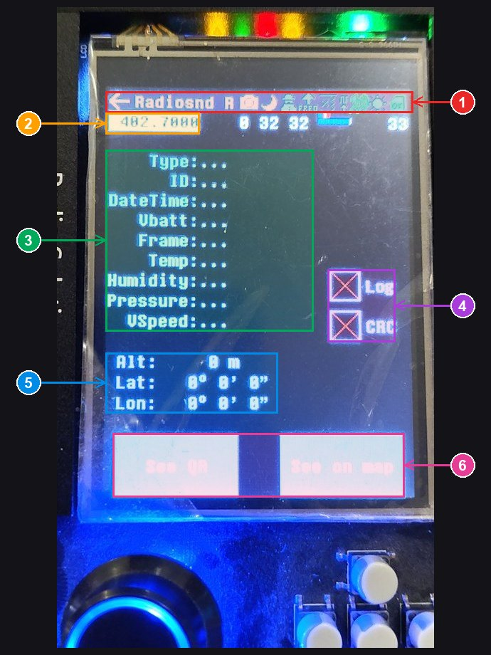
Декодує телеметрію метеозондів (RS41, M10, M20, M2K2): ідентифікатор, температура, вологість, тиск, висота, координати GPS.
- Типова частота — 402,7 МГц.
- Поля Type, ID, Temp, Humidity, Pressure, Lat/Lon заповнюються після прийому зонда; є прапорці Log і CRC.
Докладніше на сторінці застосунку
Елементи екрана:
- Рядок заголовка
- Частота (402,7 МГц)
- Поля телеметрії: Type, ID, DateTime, Vbatt, Frame, Temp, Humidity, Pressure, VSpeed
- Прапорці Log і CRC
- Висота й координати GPS зонда
- See QR / See on map — QR-код і показ на карті
TPMS RX¶
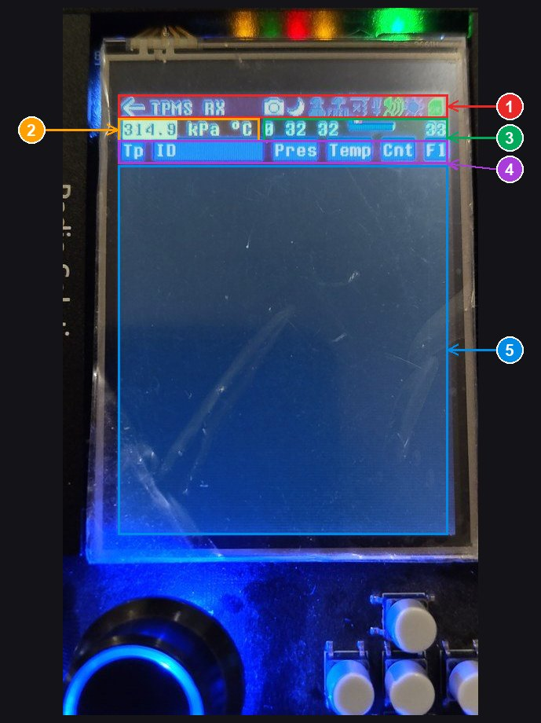
Приймає й декодує датчики тиску в шинах (TPMS) на 315/433,9 МГц.
- Колонки: Tp (тип датчика), ID, Pres (тиск), Temp, Cnt, Fl (прапорці).
- Одиниці тиску: kPa, PSI, BAR.
Докладніше на сторінці застосунку
Елементи екрана:
- Рядок заголовка
- Частота (314,9 МГц), одиниці тиску й температури
- AMP / LNA / VGA, RSSI, гучність
- Колонки: Tp, ID, Pres, Temp, Cnt, Fl
- Список знайдених датчиків
Search¶
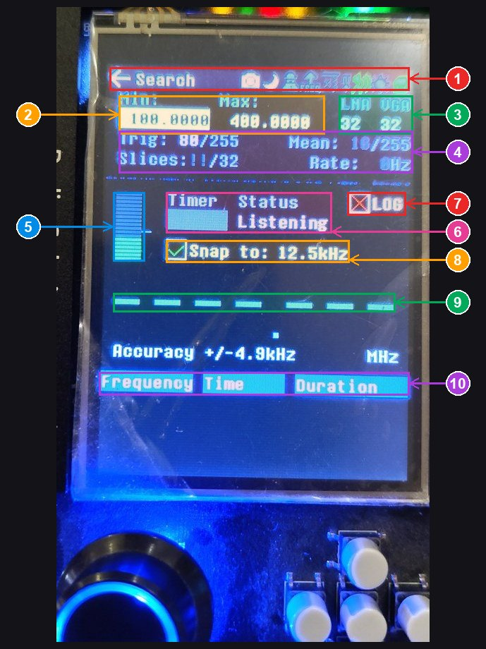
Безперервно скануює діапазон частот за допомогою ШПФ і зупиняється на сигналах, що перевищують поріг. Звук не демодулює, лише реєструє частоту й тривалість.
- Min/Max — діапазон пошуку, Trig — поріг виявлення (Mean + Trig), Snap to — округлення знайденої частоти до кроку.
- Прапорець LOG записує CSV на SD-карту.
Докладніше на сторінці застосунку
Елементи екрана:
- Рядок заголовка
- Min / Max — межі діапазону пошуку (за замовчуванням 100–400 МГц)
- LNA / VGA — підсилення
- Trig — поріг виявлення; Mean — середній рівень; Slices — зрізи; Rate — швидкість
- Індикатор рівня сигналу
- Timer / Status — статус (Listening)
- LOG — запис у CSV
- Snap to — округлення знайденої частоти (12,5 кГц)
- Знайдені частоти (останні)
- Заголовки журналу: Frequency, Time, Duration
Level¶
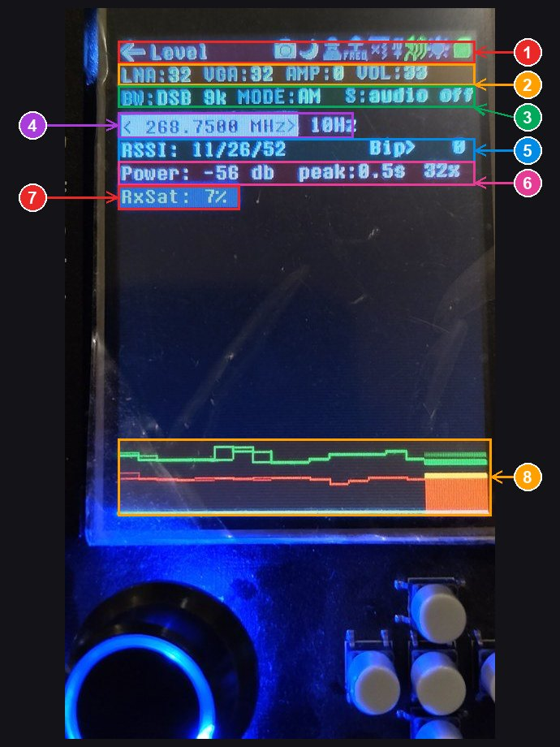
Вимірювач рівня сигналу: RSSI, потужність у дБ, показник насичення та графік історії.
- Режими AM / NFM / WFM / SPEC, налаштовувана смуга BW.
Докладніше на сторінці застосунку
Елементи екрана:
- Рядок заголовка
- LNA / VGA / AMP та VOL
- BW — смуга; MODE — AM/NFM/WFM/SPEC; S — звук
- Частота й крок налаштування
- RSSI (поточний/середній/макс.) і Bip
- Потужність у дБ і пік
- RxSat — відсоток насичення приймача
- Графік історії рівня сигналу
Weather¶
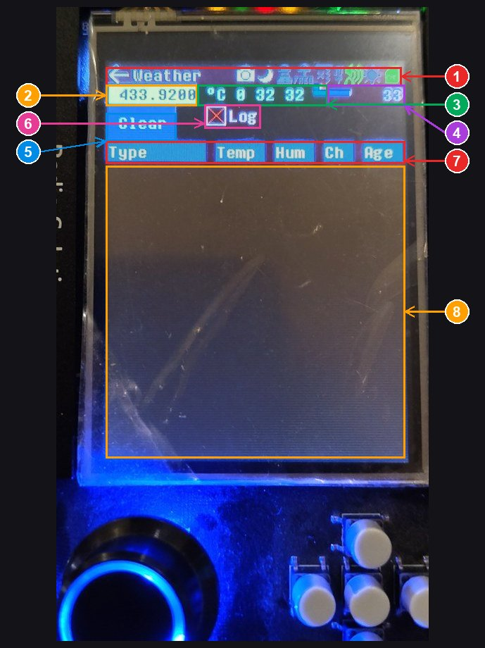
Декодує безпроводові датчики метеостанцій (температура, вологість) у ISM-діапазонах.
- Типова частота 433,920 МГц; колонки Type, Temp, Hum, Ch, Age.
- Підказка: для початку спробуйте AMP 0, LNA 32, VGA 20.
Докладніше на сторінці застосунку
Елементи екрана:
- Рядок заголовка
- Частота (433,92 МГц)
- Одиниці температури та AMP/LNA/VGA
- RSSI та гучність звукових сигналів
- Clear — очистити список
- Log — запис у CSV
- Колонки: Type, Temp, Hum, Ch, Age
- Список знайдених метеодатчиків
SubGhzD¶
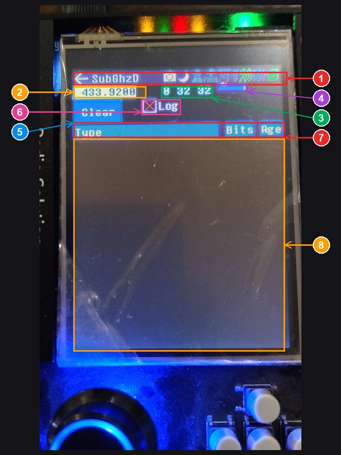
Пасивний декодер OOK/AM-пультів (ворота, гаражні двері, дверні дзвінки) нижче 1 ГГц — розпізнає понад 40 протоколів.
- Частота за замовчуванням — 433,92 МГц.
- Список: Type (протокол), Bits (довжина кадру), Age (секунд від останнього прийому).
- Clear очищає список, Log записує CSV на SD-карту.
Докладніше на сторінці застосунку
Елементи екрана:
- Рядок заголовка
- Частота (433,92 МГц)
- AMP / LNA / VGA
- Рівень RSSI
- Clear — очистити список
- Log — запис у CSV
- Колонки: Type (протокол), Bits, Age
- Список розпізнаних пультів
WeFax (WeatherFax)¶
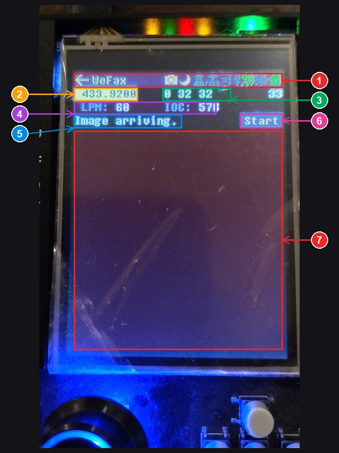
Приймає КХ-метеофакс (радіофакс) — картки погоди, які передаються аналоговим способом.
- Поля LPM (рядків за хвилину) та IOC; кнопка Start запускає запис зображення у BMP на SD-карту.
- HackRF слабо приймає КХ напряму — краще використовувати апконвертер і хорошу КХ-антену.
Докладніше на сторінці застосунку
Елементи екрана:
- Рядок заголовка
- Частота (КХ-станція)
- AMP / LNA / VGA
- LPM — рядків на хвилину; IOC — індекс співпраці
- Статус прийому («Image arriving»)
- Start — почати запис зображення
- Область зображення метеофакса
Time Sink¶
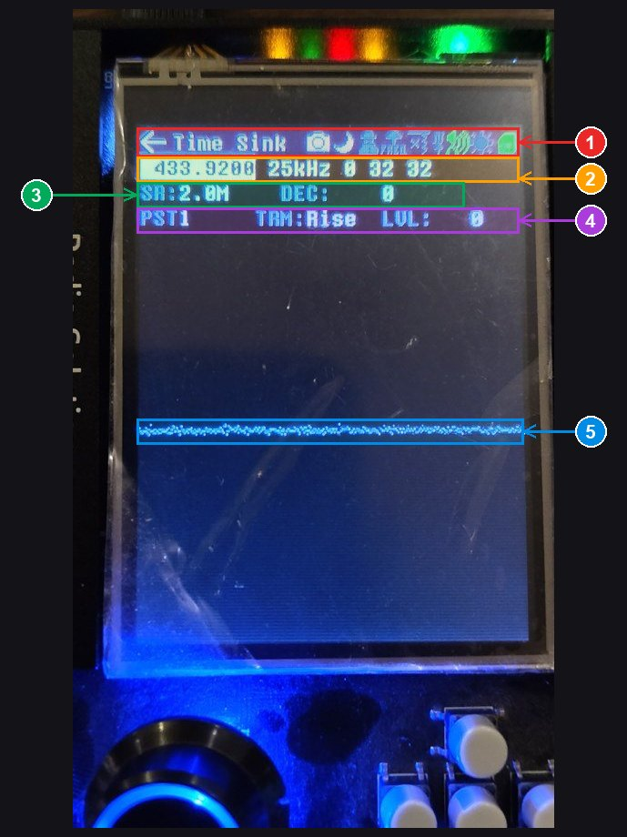
«Осцилограф» для радіо: показує компоненту I сигналу IQ у часовій області.
- SR — частота дискретизації, DEC — децимація (швидкість оновлення), TRIG/LVL — тригер.
Докладніше на сторінці застосунку
Елементи екрана:
- Рядок заголовка
- Частота, крок, AMP/LNA/VGA
- SR — частота дискретизації; DEC — децимація
- PST — передтригер; TRIG — фронт; LVL — рівень тригера
- Осцилограма: компонента I сигналу
SubCar¶
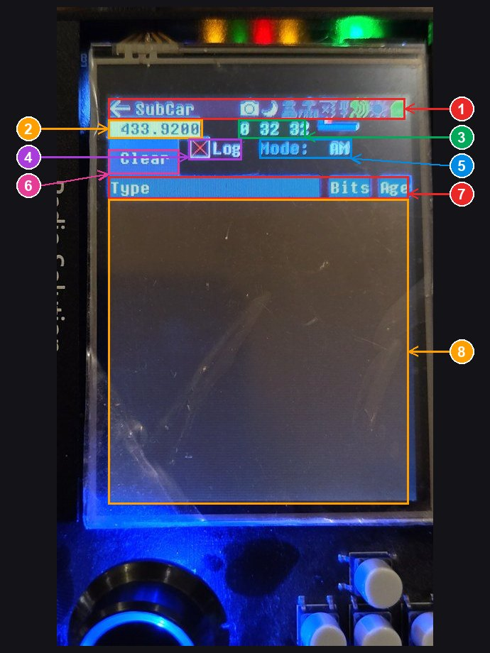
Декодує сигнали автомобільних брелоків безключового доступу (Suzuki, VW, Subaru, Kia, Ford, Fiat, BMW).
- Режим демодуляції: AM (за замовчуванням) або FM; частота 433,92 МГц (Європа).
Докладніше на сторінці застосунку
Елементи екрана:
- Рядок заголовка
- Частота (433,92 МГц)
- AMP / LNA / VGA
- Log — запис у CSV
- Mode — AM або FM
- Clear — очистити список
- Колонки: Type, Bits, Age
- Список розпізнаних брелоків
RTTY RX¶
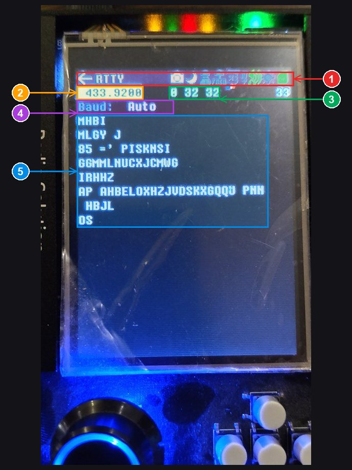
Декодує радіотелетайп (RTTY, код Бодо/ITA2) і виводить текст у реальному часі.
- Швидкість передавання (Baud) визначається автоматично або вручну.
Докладніше на сторінці застосунку
Елементи екрана:
- Рядок заголовка
- Частота
- AMP / LNA / VGA
- Baud — швидкість (Auto)
- Декодований текст RTTY (на екрані — шум)
Scanner (за списком)¶
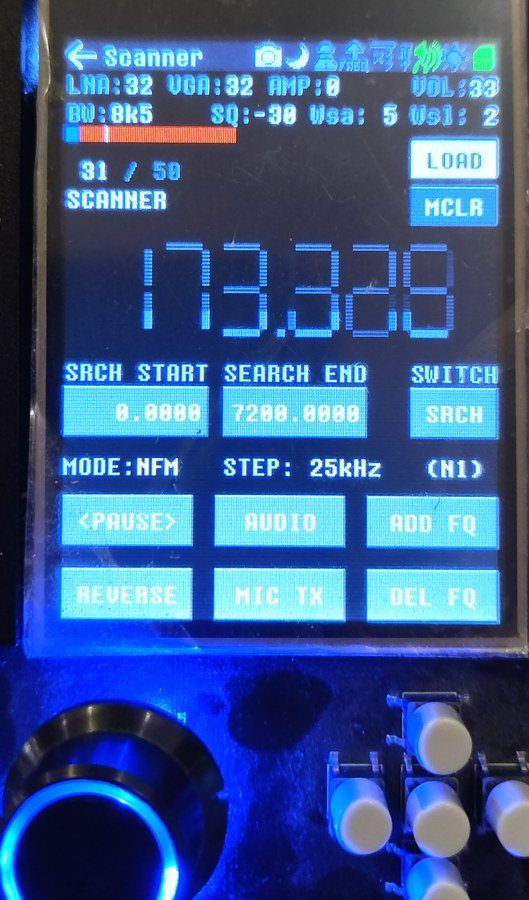
Сканер частот за списком із блокуванням на каналі, де є сигнал.
- Режим SCAN (список частот) / SRCH (пошук між початком і кінцем), великі цифри частоти змінюють колір: сірий — сканування, жовтий — перевірка, зелений — захоплено.
- Детальний розбір екрана — на анотованому зображенні в розділі Інтерфейс.
Scanner (пошук)¶
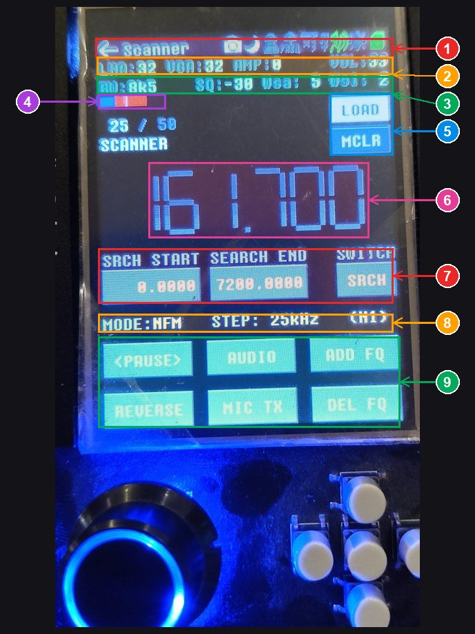
Той самий Scanner, але в режимі пошуку між початковою й кінцевою частотою з вибраним кроком.
- Кнопка SWITCH перемикає між режимами; AUDIO вмикає звук; ADD FQ/DEL FQ додає/видаляє частоту зі списку.
Докладніше на сторінці застосунку
Елементи екрана:
- Рядок заголовка
- LNA / VGA / AMP та VOL
- BW, SQ (шумоподавлювач), Wsa / Wsl
- Смужка RSSI
- LOAD / MCLR — завантажити список / очистити
- Поточна частота сканування (великі цифри)
- SRCH START / SEARCH END / SWITCH — діапазон і режим
- MODE, STEP — модуляція й крок
- PAUSE, AUDIO, ADD FQ, REVERSE, MIC TX, DEL FQ
SSTV RX¶
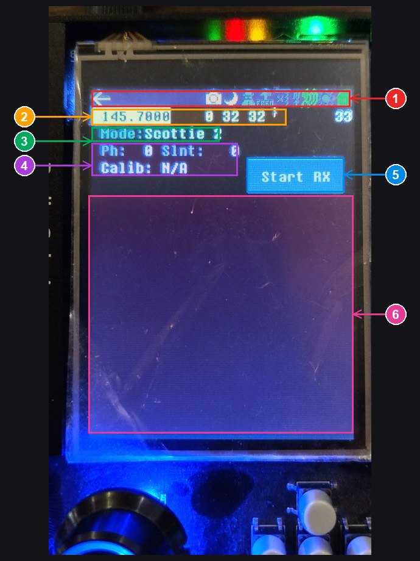
Приймає зображення SSTV (телебачення з повільним скануванням) і зберігає його у BMP на SD-карті.
- Режим (на екрані — Scottie 2), кнопка Start RX.
Докладніше на сторінці застосунку
Елементи екрана:
- Рядок заголовка (стрілка ←)
- Частота (145,800 МГц) і підсилення
- Mode — режим SSTV (Scottie 2)
- Ph / Slnt — фаза / тиша; Calib — калібрування
- Start RX — почати приймання
- Область прийнятого зображення
ProtoView¶
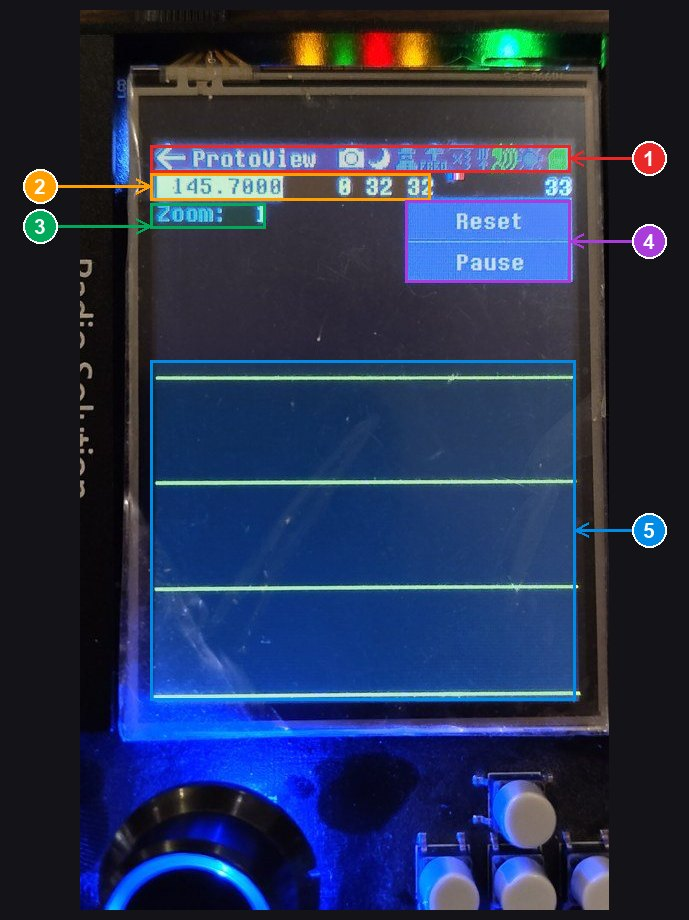
Візуалізатор «сирих» OOK/ASK-імпульсів у вигляді графіка; корисний для невідомих сигналів.
- Zoom — масштаб за часом (мкс на піксель), Reset — скинути буфер, Pause/Resume — заморозити та роздивитися сигнал.
Докладніше на сторінці застосунку
Елементи екрана:
- Рядок заголовка
- Частота, AMP/LNA/VGA
- Zoom — масштаб за часом (мкс/піксель)
- Reset — скинути; Pause — заморозити
- Форма OOK/ASK-сигналу
NRF RX¶
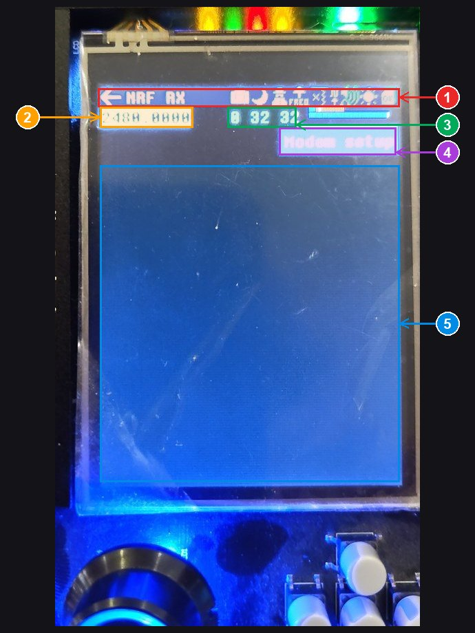
Декодує пакети чипів nRF24L01+ на 2,4 ГГц (бездротові клавіатури, миші, пульти). Підтримує лише режим 250 кбіт/с.
- Частота = 2400 + номер каналу МГц (за замовчуванням 2480 МГц); кнопка Modem setup.
Докладніше на сторінці застосунку
Елементи екрана:
- Рядок заголовка
- Частота = 2400 + номер каналу (2480 МГц)
- AMP / LNA / VGA
- Modem setup — налаштування модему
- Область виведення прийнятих пакетів
NRF RX (прийняті дані)¶
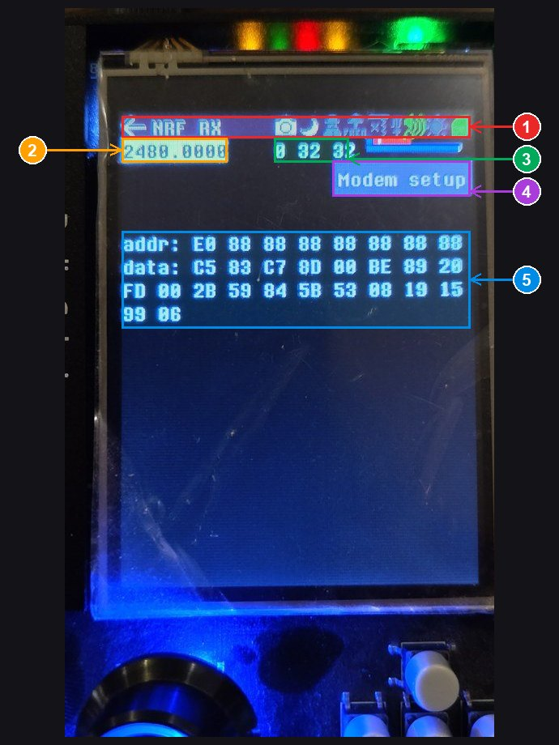
Той самий застосунок: приклад прийнятого пакета — адреса (addr) і дані (data) у шістнадцятковому вигляді.
Докладніше на сторінці застосунку
Елементи екрана:
- Рядок заголовка
- Частота 2480 МГц
- AMP / LNA / VGA
- Modem setup
- addr — адреса; data — вміст пакета в hex
NOAA APT¶
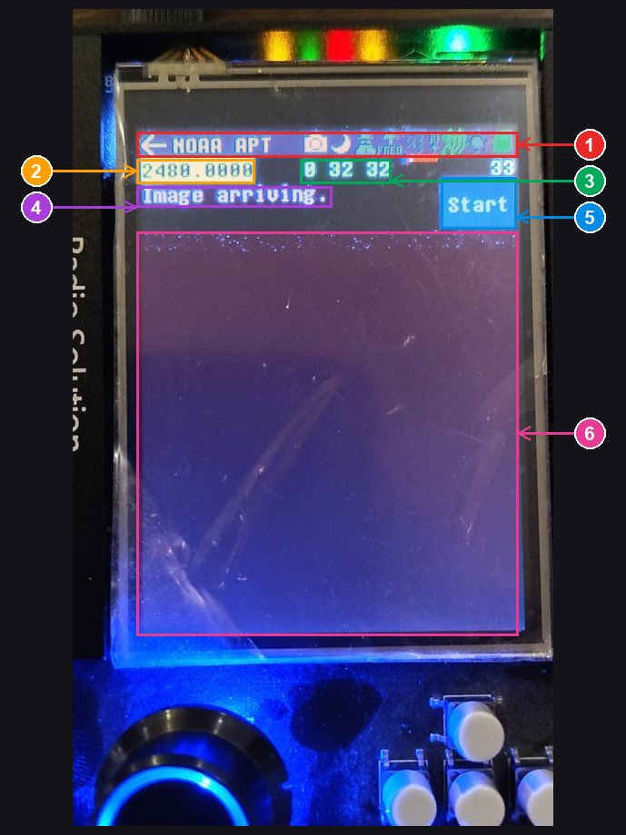
Приймає аналогові зображення APT із метеосупутників NOAA (137 МГц). Усі три супутники NOAA POES виведено з експлуатації у 2025 році, тож сигналу вже немає.
- Кнопка Start; напис Image arriving означає очікування зображення.
Докладніше на сторінці застосунку
Елементи екрана:
- Рядок заголовка
- Частота (137 МГц-діапазон)
- AMP / LNA / VGA
- Статус прийому («Image arriving»)
- Start — почати запис зображення
- Область зображення APT
gfxEQ¶
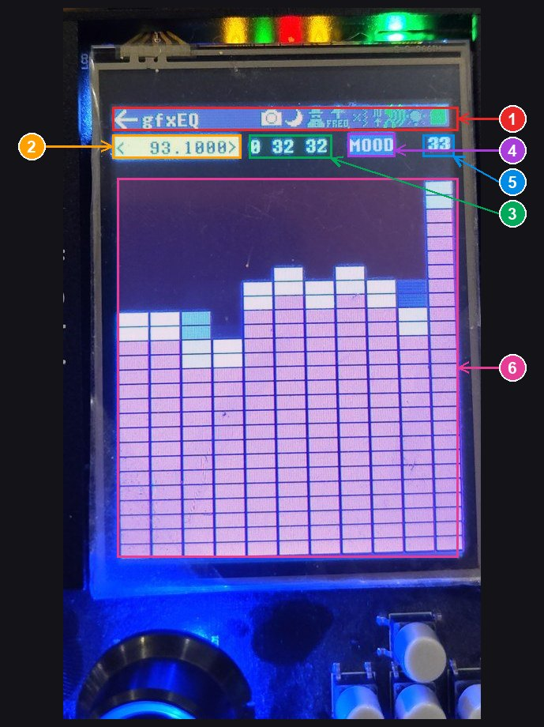
Широкосмуговий FM-приймач із графічним еквалайзером на весь екран (11 смуг, 20 кольорових тем).
- Кнопка MOOD перемикає тему; частота за замовчуванням — 93,1 МГц.
Докладніше на сторінці застосунку
Елементи екрана:
- Рядок заголовка
- Частота (93,1 МГц); крок 25 кГц
- AMP / LNA / VGA
- MOOD — змінити кольорову тему
- Гучність
- Графічний еквалайзер (11 смуг)
ACARS¶
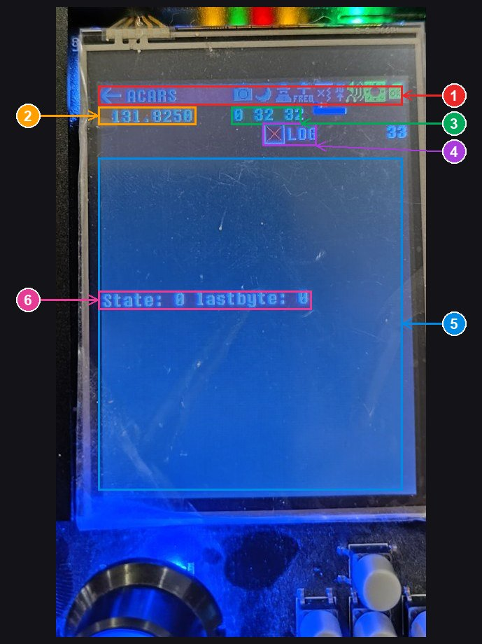
Декодує повідомлення авіаційної лінії передавання даних ACARS на VHF (131,825 МГц) і виводить їх у консоль.
- Прапорець LOG записує повідомлення в
LOGS/ACARS.TXT.
Докладніше на сторінці застосунку
Елементи екрана:
- Рядок заголовка
- Частота (131,825 МГц)
- AMP / LNA / VGA
- LOG — запис у LOGS/ACARS.TXT
- Консоль декодованих повідомлень
- State / lastbyte — службовий стан декодера
Morse RX¶
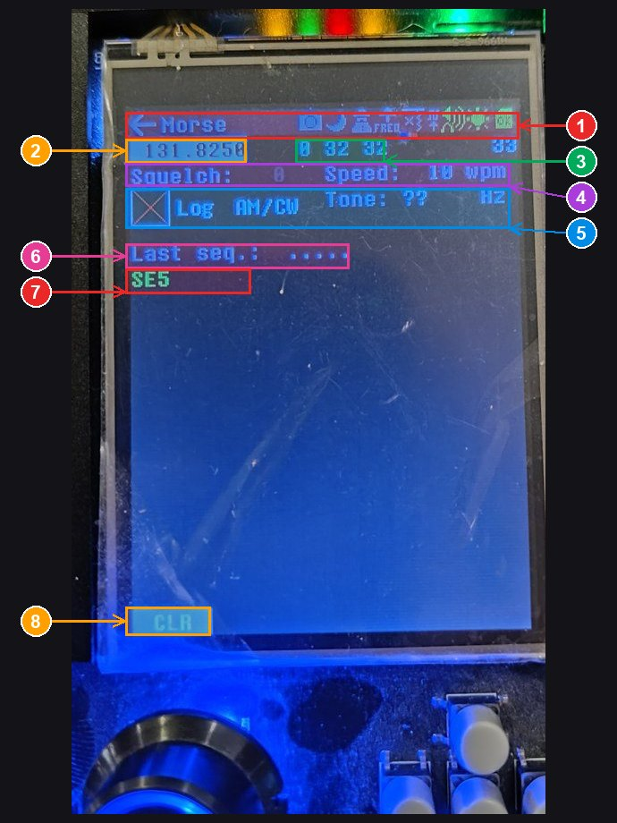
Автоматично визначає тон і швидкість та декодує азбуку Морзе (CW) у текст.
- Поля Squelch, Speed (wpm), Tone, Log.
Докладніше на сторінці застосунку
Елементи екрана:
- Рядок заголовка
- Частота
- AMP / LNA / VGA
- Squelch — поріг; Speed — швидкість (wpm)
- Log; AM/CW — режим; Tone — виявлений тон
- Last seq. — остання послідовність точок і тире
- Декодований текст
- CLR — очистити
FPV Detect¶
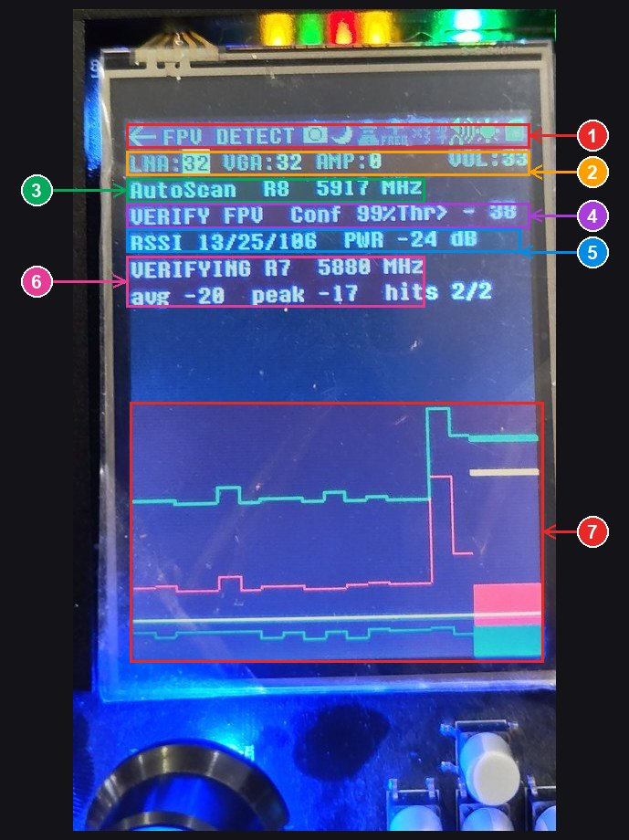
Виявляє аналогові FPV-відеопередавачі дронів на 5,8 ГГц у діапазонах A, B, E, F, R і визначає канал.
- Режими AutoScan та ручний; показує RSSI/SNR і перевіряє знайдені канали.
Докладніше на сторінці застосунку
Елементи екрана:
- Рядок заголовка
- LNA / VGA / AMP та гучність
- Режим AutoScan; поточний канал (R8, 5917 МГц)
- VERIFY FPV — перевірка; Conf — впевненість; Thr — поріг
- RSSI та потужність сигналу
- Перевірка наступного каналу; avg / peak / hits
- Графік рівнів по каналах
Fox Hunt¶
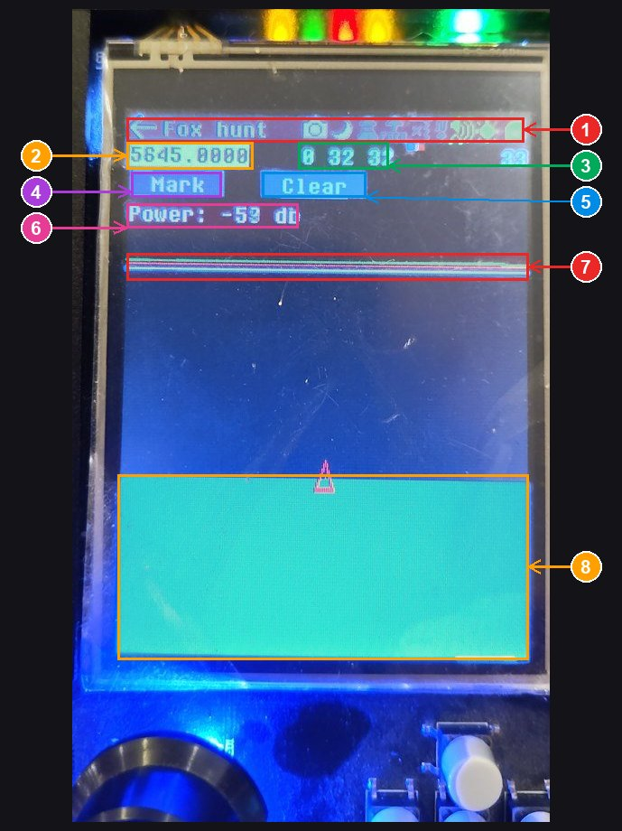
Допомога в «полюванні на лисиць» (радіопеленгація AM-джерела): графік рівня сигналу в реальному часі.
- Кнопки Mark (поставити маркер із GPS/компасом) і Clear; частота змінюється кроком 100 Гц.
Докладніше на сторінці застосунку
Елементи екрана:
- Рядок заголовка
- Частота (крок 100 Гц)
- AMP / LNA / VGA
- Mark — поставити маркер (з GPS і компаса)
- Clear — очистити маркери
- Power — поточна потужність сигналу
- Графік рівня сигналу в часі
- Область карти / компаса (потрібні GPS і компас)
Radio¶
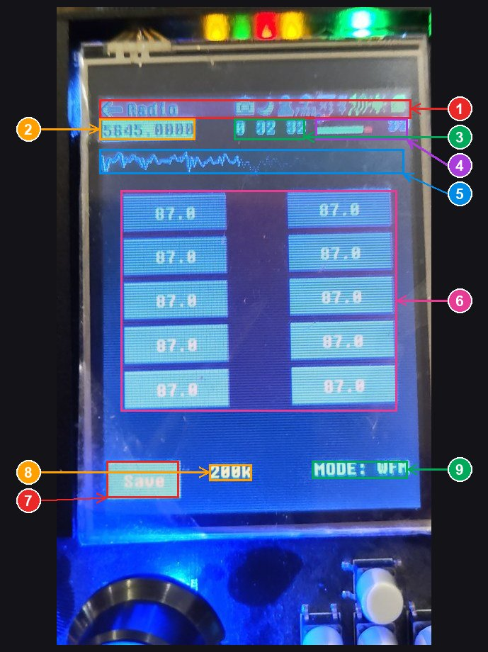
Мовний приймач AM/NFM/WFM із 10 швидкими слотами обраних частот.
- Кнопки-слоти (на скріншоті порожні — 87,0 МГц), Save зберігає поточну частоту в слот, MODE: WFM, смуга 200k.
Докладніше на сторінці застосунку
Елементи екрана:
- Рядок заголовка
- Частота
- AMP / LNA / VGA
- RSSI і гучність
- Звукова хвиля (у режимі WFM клік перемикає на еквалайзер)
- 10 швидких слотів частот; клік завантажує пресет
- Save — зберегти поточну частоту в слот
- Смуга пропускання (200k)
- MODE — режим (WFM)
Radio (інший знімок)¶
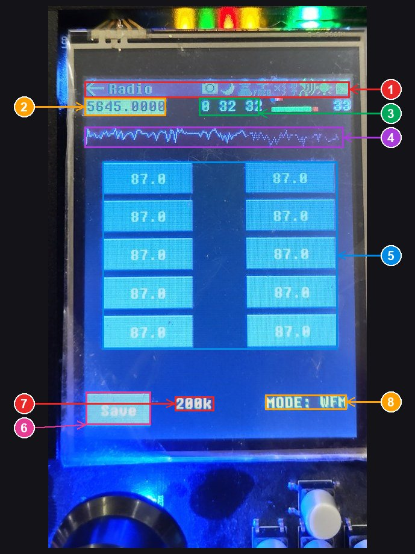
Той самий застосунок Radio; зверху видно звукову хвилю приймання.
Докладніше на сторінці застосунку
Елементи екрана:
- Рядок заголовка
- Частота
- AMP / LNA / VGA
- Звукова хвиля приймання
- 10 швидких слотів частот
- Save — зберегти в слот
- Смуга
- Режим
EPIRB RX¶
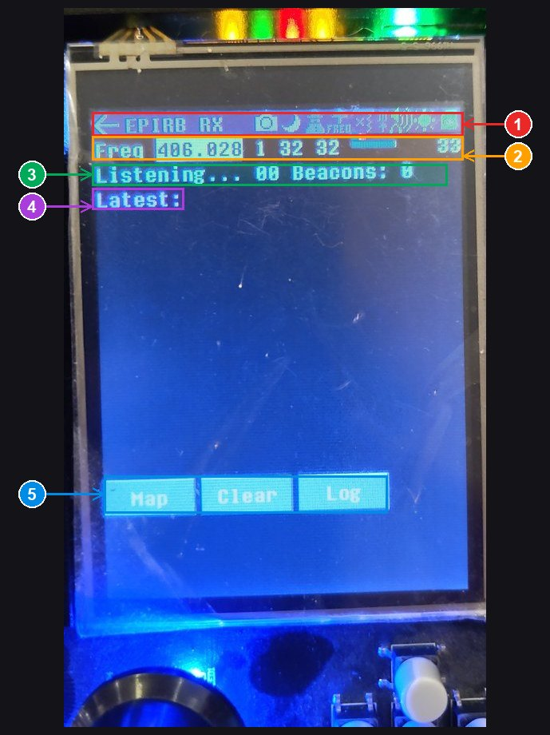
Декодує аварійні маяки COSPAS-SARSAT 406 МГц (EPIRB, PLB, ELT) із виправленням помилок BCH.
- Кнопки Map, Clear, Log; статус — «Listening… Beacons: 0».
Докладніше на сторінці застосунку
Елементи екрана:
- Рядок заголовка
- Freq 406,028 МГц; AMP / LNA / VGA
- Listening… — стан; Beacons — кількість маяків
- Latest — останній прийнятий маяк
- Map (карта), Clear (очистити), Log (запис)
ERT Meter¶
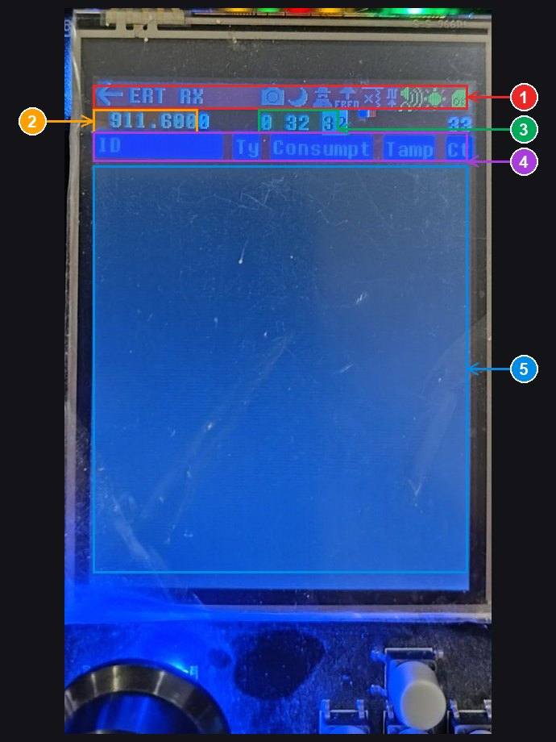
Декодує показання комунальних лічильників за протоколом ERT (діапазон 902–928 МГц).
- Частота за замовчуванням — 911,6 МГц; колонки списку: ID, Tp, Consumpt, Temp, Ct.
Докладніше на сторінці застосунку
Елементи екрана:
- Рядок заголовка
- Частота (911,6 МГц)
- AMP / LNA / VGA
- Колонки: ID, Ty (тип), Consumpt (споживання), Temp, Ct
- Список лічильників
FLEX RX¶
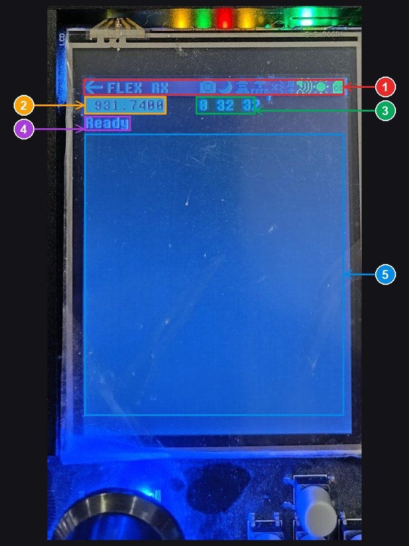
Декодує пейджинговий протокол FLEX (1600/3200/6400 бод): адреса пейджера (capcode) і текст повідомлення.
Докладніше на сторінці застосунку
Елементи екрана:
- Рядок заголовка
- Частота (931,74 МГц)
- AMP / LNA / VGA
- Статус (Ready)
- Список прийнятих повідомлень (capcode й текст)
Detector¶
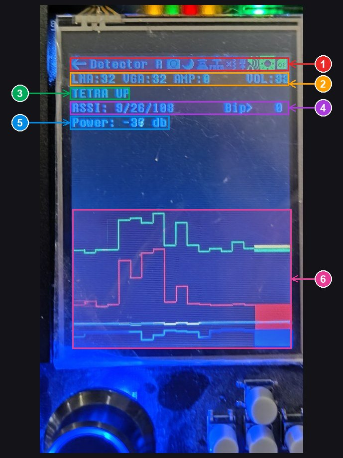
Швидке виявлення сигналів за списками частот: LoRa, пульти, аплінк TETRA. Подає звуковий сигнал при перевищенні порогу.
- Пресет (на екрані — TETRA UP 380–390 МГц), графік потужності, RSSI.
Докладніше на сторінці застосунку
Елементи екрана:
- Рядок заголовка
- LNA / VGA / AMP та VOL (гучність сигналу)
- Пресет (TETRA UP 380–390 МГц)
- RSSI та лічильник звукових сигналів Bip
- Потужність сигналу в дБ
- Графіки рівнів по частотах пресета
Analog TV¶
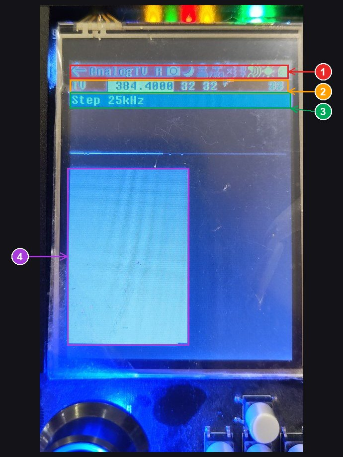
Приймає чорно-біле аналогове відео PAL (AM). Цифрове ТБ не підтримується.
- Крок налаштування Step 25kHz.
Докладніше на сторінці застосунку
Елементи екрана:
- Рядок заголовка
- Частота (384,4 МГц), підсилення, гучність
- Step — крок налаштування
- Зображення PAL (чорно-біле)
AFSK RX¶
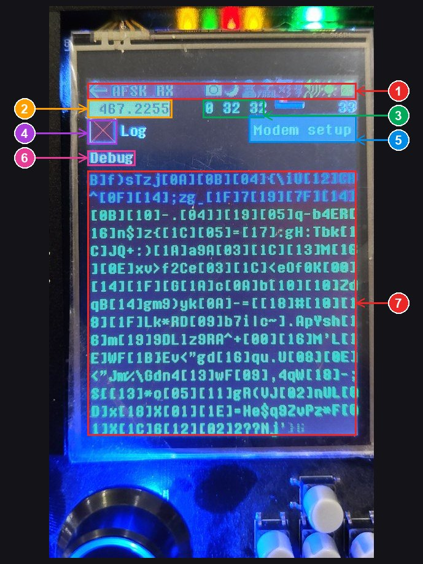
Експериментальний AFSK-декодер. Жорстко налаштований на модем LCR/TEDI (467,225 МГц, Bell 202), на інших сигналах виводить випадкові символи.
- Прапорець Log, кнопка Modem setup, внизу — налагоджувальний потік символів.
Докладніше на сторінці застосунку
Елементи екрана:
- Рядок заголовка
- Частота (467,2255 МГц)
- AMP / LNA / VGA
- Log — запис у файл
- Modem setup — параметри модему
- Debug — потік символів
- Сирий потік декодованих символів